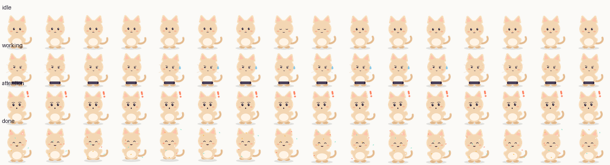

把之前的 A 方向（分层 SVG）参数化成 4 状态 × 16 帧 = 64 帧，按 deepseek-openpet 的 schema 2 输出：16 列 × 4 行、每格 256×256、透明背景、pet.json 带状态机。下面是在暗色舞台上的真实播放效果（用这张图集直接跑 sprite 动画，不是视频）。
✓ 64 帧全部通过边界检查，无裁切 · 透明底 · 445KB64 帧
256 × 256
445 KB PNG
schema 2
下面的动画由页面里的 JS 按 pet.json 的帧序与时长驱动同一个图集——和将来 App 里的播放器逻辑一致。done 会播一次并定格 1.5 秒，这里为了演示会循环重播。

| 项 | 这版（麻薯猫猫） | deepseek-openpet |
|---|---|---|
| 格式 | schema 2，字段完全对齐 | schema 2 |
| 状态 / 帧数 | idle / working / attention / done，各 16 帧 | 同样四态 × 16 帧 |
| 图集体积 | 445 KB PNG | 4.0 MB PNG |
| 品牌 | 我们自己的猫，可商用/可改 | DeepSeek 鲸鱼 IP，zip 里无 LICENSE |
| 美术风格 | 扁平手绘矢量（和现有 SVG 宠物同源） | 厚涂/带白色描边的立体感 |
| 可迭代性 | 改 generate.py 参数即可重出，帧表可调 | 只有成品图，改不了 |
一个 SpritePet 组件就够了：把 aiState 映射到四个状态，播放器按 pet.json 的帧时长走 rAF（和本页同一套逻辑）。现有 pet-canvas 的降级路径可以保留：图集加载失败仍用旧 SVG。
// 映射：AI 四态 → 图集状态
const STATE = { idle:'idle', working:'working', asking:'attention', completed:'done' } as const;
// 播放：按 pet.json 的 frames[duration] 推进，done 播完停在末帧
function advance(state, elapsed) { /* 同本页 JS */ }
// CSS：background-image 指向 spritesheet.webp，background-position 用 -col*size / -row*size上线前建议再转一次 WebP（无损，预计 445KB → 200KB 左右），并按状态拆 4 张懒加载；减少动效时定格首帧；后台暂停 rAF。
我把图集转 WebP、写 SpritePet 组件，替换现有 CSS 猫，AI 四态直接驱动；旧 SVG 保留为降级。
耳朵角度、头身比、动作幅度、配色都能改 generate.py 再生成一版，不用重画。
把 deepseek-openpet 的图集转 WebP 直接内置当宠物，先把链路跑通，形象以后再说。